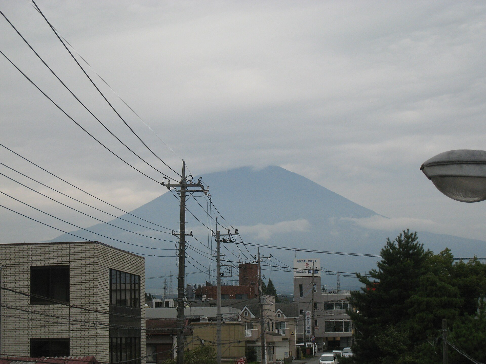
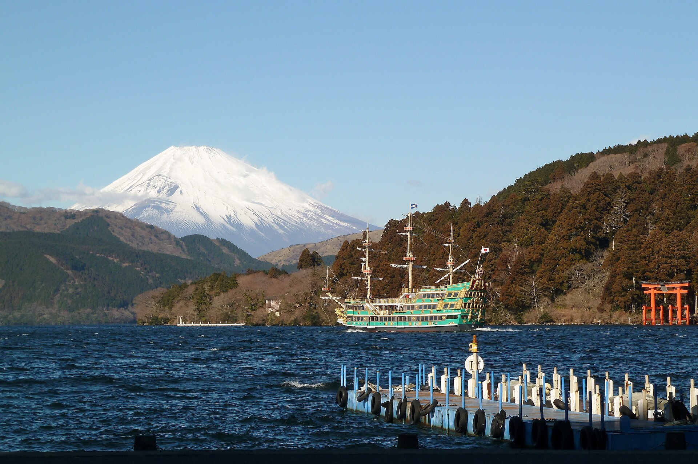
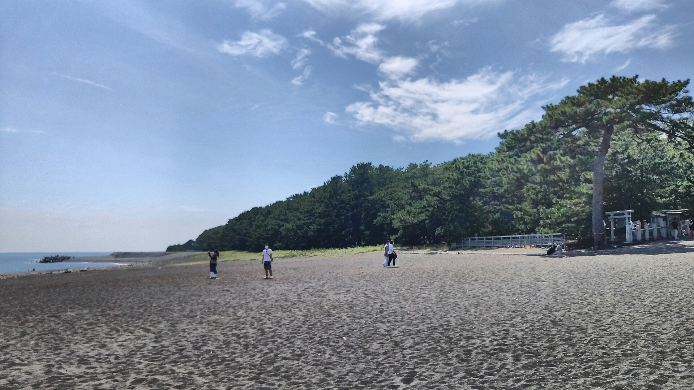
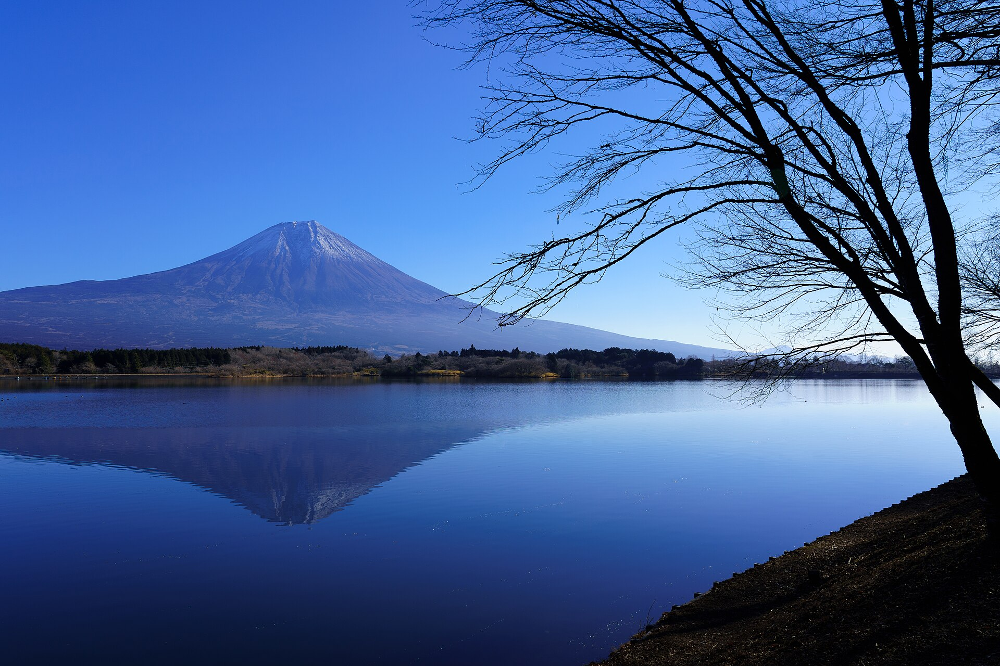

LIVE Japan
LIVE Japan
Ask someone to draw Mount Fuji and the pencil usually knows what to do: two calm slopes, one snowy cap, perfect balance. That outline is so powerful that it has escaped geography. It sits on bathhouse walls, souvenirs and screens; it can mean “Japan” before a single word is read.
But the real mountain refuses to hold that pose. Travel around its 3,776-metre mass and the summit changes position. One flank looks orderly; another reveals a great volcanic wound. Lakes mirror it, pine trees frame it, and the Pacific makes it seem impossibly far away. The icon is not false. It is only one selected angle.
North · Lake Kawaguchi: the Fuji in your memory
The northern shore of Lake Kawaguchi gives the mountain its grandest stage. Water creates distance, low development leaves the cone legible, and on still mornings the reflection completes the symmetry. This is the face that feels pre-edited: mountain, snow, lake and sky arranged in horizontal bands.
It is also the easiest of the Fuji Five Lakes to reach from central Tokyo, which explains both its popularity and its crowds. Japan’s tourism authority recommends winter for the clearest views; in any season, early morning generally offers better visibility than a hazy afternoon. The important lesson is to stay long enough for the weather to change. Fuji can disappear behind cloud in minutes, then return just as quickly.
The postcard is real—but it is a collaboration between one shoreline, one direction and one lucky patch of air.
East · Gotemba: the cone breaks open

Move east toward Gotemba and the graphic logo begins to fail—in the best way. The mountain looks wider and more complex, its descending ridges easier to read. From this side, the huge Hōei crater cuts into the southeastern flank. It was formed during the 1707 Hōei eruption, Fuji’s most recent eruption, and it interrupts the expectation of a perfectly smooth cone.
Gotemba’s view is valuable precisely because it is less idealised. The mountain seems heavier, closer to weather and geology. If Kawaguchi shows how Fuji became a symbol, the east shows why the symbol should never be mistaken for a diagram.
Southeast · Hakone: a mountain behind mountains

From Hakone, Fuji is no longer the whole scene. Lake Ashi, wooded ridges, boats and shrine gates occupy the foreground; the white summit arrives beyond them. That layering makes the mountain feel less like an object beside you and more like a distant presence watching over a separate landscape.
This view can be elusive. Hakone has its own mountains and fast-changing cloud, so a day that is clear in Tokyo does not guarantee an open summit here. Yet concealment is part of the experience. Hokusai and Hiroshige repeatedly placed everyday activity before Fuji; the mountain’s power often came from being small, distant or partially hidden rather than filling the frame.
South · Miho no Matsubara: Fuji meets the sea

Miho no Matsubara changes the scale again. From the pine-lined shore near Shizuoka, Fuji rises beyond Suruga Bay and the inhabited coastal plain. Salt air, dark beach and maritime distance replace the lakeside mirror. On a clear day the mountain connects sea level to the country’s highest point in one glance.
The view is not merely scenic. Miho is one of the 25 component parts of UNESCO’s “Fujisan, sacred place and source of artistic inspiration.” Its pines and distant Fuji have appeared in literature and art for centuries. The modern harbour and city have not erased that older composition; they remind us that famous landscapes are lived in, not preserved inside empty frames.
West · Lake Tanuki: the light changes the map

Lake Tanuki, west of the summit, offers a quieter mirror than Kawaguchi and a different relationship with the sun. Around late April and late August, sunrise can align with the summit to produce “Diamond Fuji,” a bright point balanced on the peak. The phenomenon lasts only moments and depends on season, position and weather—a useful correction to the idea that a famous view is permanently available.
From the west, the mountain’s ridges and snow lines produce another silhouette. Even the direction of light changes what feels like the “front.” There is no official face of Fuji. Every community around its base inherits a different mountain, and every artist chooses which one to carry away.
Why all these Fujis belong together
UNESCO classifies Fujisan as a cultural World Heritage property, not a natural one. The designation includes pilgrimage routes, shrines, springs, lakes and viewpoints because the heritage lies in the relationship between the volcano and generations of people who worshipped, climbed and pictured it. That is why changing angles matter. Fuji’s identity was built by repeated acts of looking.
Hokusai’s Thirty-six Views of Mount Fuji understood the trick two centuries ago: keep the mountain, change the human world around it. The cone could be immense or tiny, obvious or nearly lost. Today, travelling around Fuji performs the same experiment in three dimensions.
How to plan a Fuji-viewing day
| View | Best chance | Reality check |
|---|---|---|
| North Lake Kawaguchi | Winter; early morning | Easy from Tokyo, so expect crowds at famous shores. |
| East Gotemba | Clear autumn–winter air | Excellent for the volcanic flank; outlets and roads shape many viewpoints. |
| Southeast Hakone | Cold, dry mornings | Local ridges and cloud can hide Fuji even when the lake is clear. |
| South Miho | Winter mornings | Bus or taxi from Shimizu; urban and port elements are part of the view. |
| West Lake Tanuki | Sunrise; late Apr/Aug for alignment | Fewer direct transport options; “Diamond Fuji” is weather-dependent. |
Build flexibility into the day. Check a live camera before committing to a long transfer, but remember that a clear camera image is not a promise. Winter usually brings the sharpest long-distance visibility; June and early July are often cloudier with the rainy season. Near the mountain, early morning and late afternoon can be more rewarding than midday.
Viewing Fuji is not the same as climbing it. Summit access is seasonal, safety rules can change, and the four official trails require preparation. For a visual journey, no ascent is necessary. Public transport works well for Kawaguchi, Hakone and Miho, while the west side rewards a car or a more carefully timed bus plan. Conditions and access checked October 25, 2026.
Choose two contrasting views rather than racing for all five. Pair north with east to see the perfect cone become volcanic terrain, or south with west to watch the Pacific landscape turn into a lake reflection. The point is not to collect photographs. It is to notice when the mountain stops matching the image in your head.
Sources & further reading
- UNESCO World Heritage Centre — Fujisan, sacred place and source of artistic inspiration
- UNESCO — Fujisan nomination dossier
- Japan National Tourism Organization — Best views of Mount Fuji
- JNTO — Lake Kawaguchi
- JNTO — Miho no Matsubara
- Official Website for Mt. Fuji Climbing — Enjoying Mount Fuji from each side
- Official Website for Mt. Fuji Climbing — Live cameras
Photography credits and licenses appear beneath each image. Travel details can change; verify transport, weather and mountain rules with official operators before departure.

See the Japan between the icons.
Walk real streets with me, then learn Japanese while playing with DraMap.